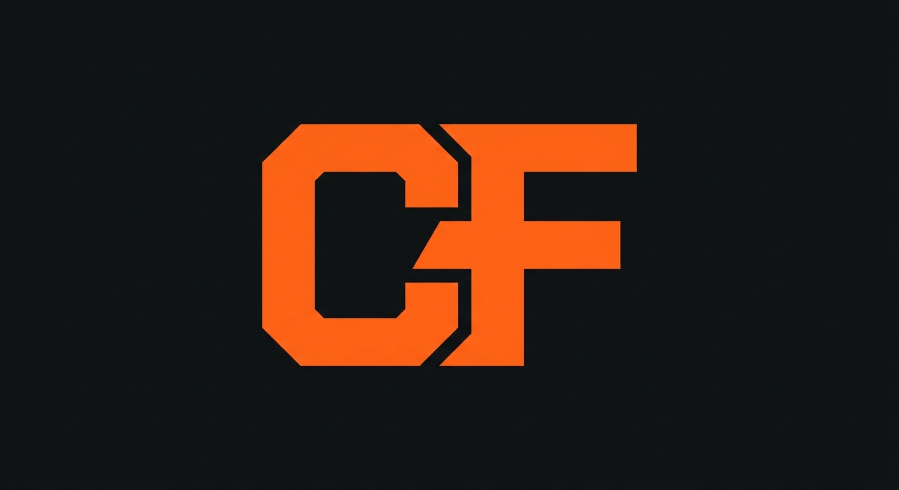
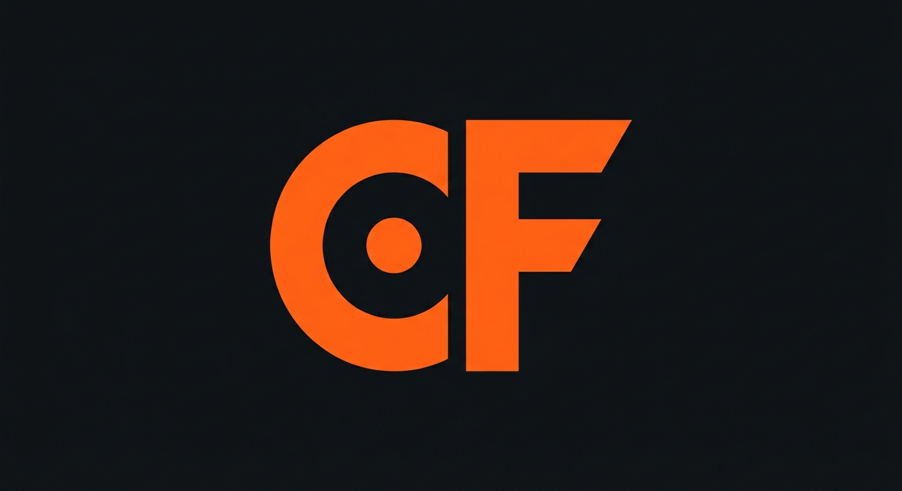
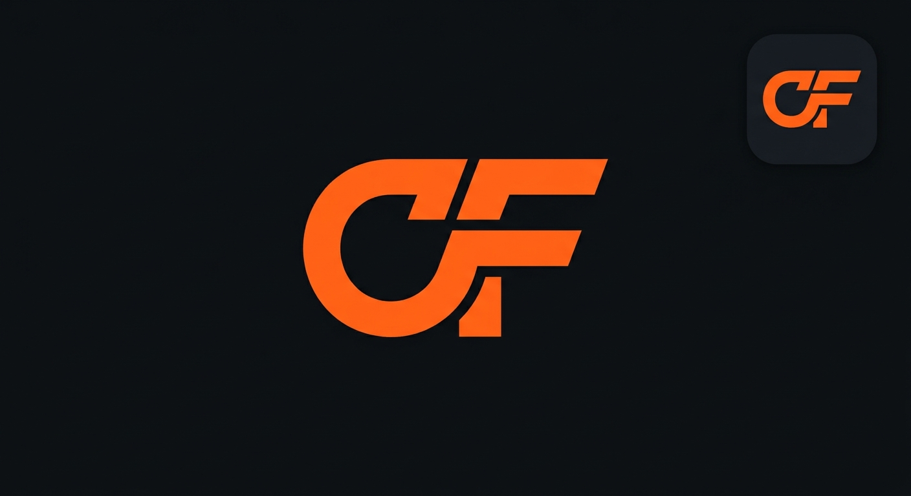
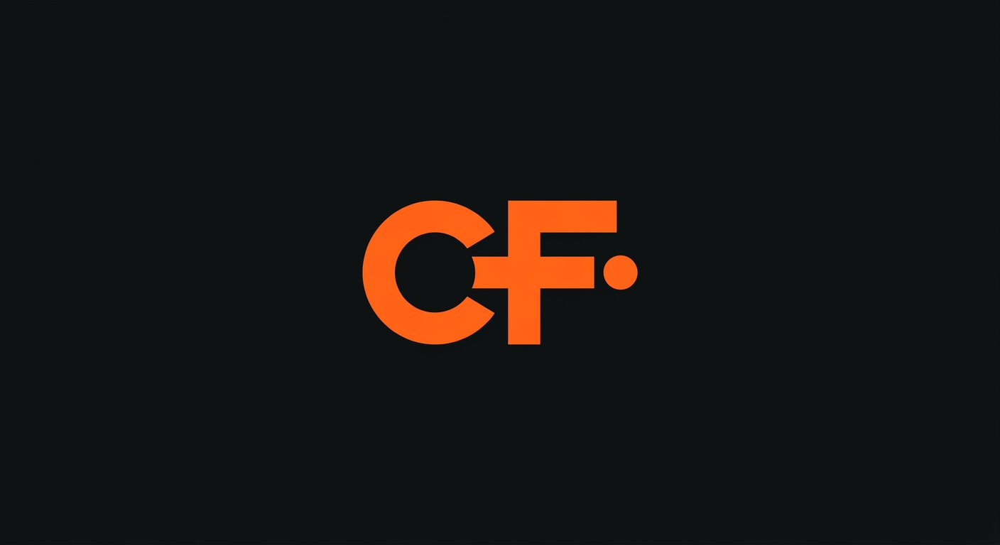

Brief: both capitals, hi-vis orange on near-black, digital-only, pure letters first, one restrained touch max. The strip below each concept is the 60px test: if it doesn't survive there, it dies. These are AI concept images; the chosen direction gets rebuilt as clean vector.
Industrial blocky cut, letters squared off. No icon, no tricks.

The C cradles a single dot: the crew on the map. The one restrained touch.

C and F share one stroke, forward-leaning. Comes with its own app-tile crop.

The F's arm reaches a stop. Route language, minimal.
